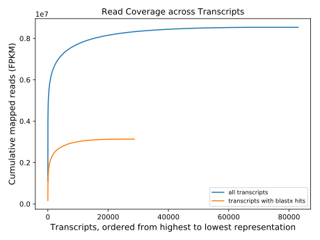

id 043D ncbi_id 46827 itis_id 146774
|
Run 3 qc 2021-06-09T16:15:41.509929 holy7c04401.rc.fas.harvard.edu |
Wall Time (s) : 515.45 User Time (s) : 488.83 System Time (s) : 7.45 Max Memory (KB) : 1,604,024 |
|
|
Run 15 transcriptome 2021-06-10T02:59:59.958606 holy7c04401.rc.fas.harvard.edu |
Wall Time (s) : 17923.13 User Time (s) : 201721.14 System Time (s) : 17970.12 Max Memory (KB) : 67,656,416 |
Quality control for raw Illumina reads using FastQC.
| FASTQ 1 (full report) | FASTQ 2 (full report) | |
|---|---|---|
| Basic Statistics | PASS | PASS |
| Per base sequence quality | PASS | PASS |
| Per tile sequence quality | PASS | WARN |
| Per sequence quality scores | PASS | PASS |
| Per base sequence content | FAIL | FAIL |
| Per sequence GC content | FAIL | WARN |
| Per base N content | PASS | PASS |
| Sequence Length Distribution | WARN | WARN |
| Sequence Duplication Levels | FAIL | FAIL |
| Overrepresented sequences | FAIL | FAIL |
| Adapter Content | FAIL | FAIL |
| Kmer Content | FAIL | FAIL |
FastQC is a tool from Babraham Bioinformatics that generates detailed quality diagnostics of NGS sequence data.
| Wall Time (s) | User Time (s) | System Time (s) | Max Memory (KB) | 257.05 [sum] | 244.25 [sum] | 3.61 [sum] | 1,538,692 [max] |
|---|
| Command | Stage | Wall Time (s) | User Time (s) | System Time (s) | Max Memory (KB) |
|---|---|---|---|---|---|
| fastqc | fastqc | 257.05 | 244.25 | 3.61 | 1,538,692 |
Estimates the insert size distribution of paired-end Illumina data by assembling a subset of the data and mapping read pairs to it. The insert size does not include the adapters added during library preparation.
| Mean insert size (bp) | 182.18 |
| Standard deviation (bp) | 52.80 |
A histogram of insert sizes.
| Wall Time (s) | User Time (s) | System Time (s) | Max Memory (KB) | 287.92 [sum] | 2402.26 [sum] | 716.32 [sum] | 1,573,716 [max] |
|---|
| Command | Stage | Wall Time (s) | User Time (s) | System Time (s) | Max Memory (KB) |
|---|---|---|---|---|---|
| filter_illumina | assemble_subset | 2.76 | 2.02 | 0.64 | 64,112 |
| trinity | assemble_subset | 269.80 | 2259.04 | 646.07 | 1,573,716 |
| bowtie2-build | estimate_insert | 0.98 | 0.65 | 0.09 | 98,608 |
| bowtie2 | estimate_insert | 14.38 | 140.54 | 69.52 | 941,432 |
Assembles and identifies ribosomal RNA (rRNA) sequences, removes read pairs that map to these rRNA sequences, and provides a variety of diagnostics about rRNA. A single exemplar sequence is presented for each type of rRNA that is found, but rRNA read pairs are excluded by mapping to a large set of rRNA transcripts that are derived from multiple assemblies over a range of data subset sizes.
| Read pairs examined | 35,794,571 |
| Read pairs kept | 19,206,874 |
| Percent kept | 53.7% |
| Gene | Mapped Reads | Percent |
| small-nuclear-rRNA | 8,218,914 | 11.5% |
| large-nuclear-rRNA | 8,689,921 | 12.1% |
| Wall Time (s) | User Time (s) | System Time (s) | Max Memory (KB) | 868.03 [sum] | 4571.41 [sum] | 1639.22 [sum] | 2,477,144 [max] |
|---|
| Command | Stage | Wall Time (s) | User Time (s) | System Time (s) | Max Memory (KB) |
|---|---|---|---|---|---|
| filter_illumina | assemble_subsets.1000 | 0.10 | 0.02 | 0.05 | 64,788 |
| trinity | assemble_subsets.1000 | 10.38 | 27.75 | 4.34 | 734,644 |
| filter_illumina | assemble_subsets.2500 | 0.08 | 0.03 | 0.03 | 65,148 |
| trinity | assemble_subsets.2500 | 12.96 | 53.13 | 9.01 | 746,324 |
| filter_illumina | assemble_subsets.5000 | 0.12 | 0.05 | 0.05 | 65,164 |
| trinity | assemble_subsets.5000 | 15.72 | 88.72 | 14.36 | 743,964 |
| filter_illumina | assemble_subsets.10000 | 0.18 | 0.10 | 0.06 | 65,184 |
| trinity | assemble_subsets.10000 | 23.30 | 156.60 | 23.92 | 746,248 |
| filter_illumina | assemble_subsets.25000 | 0.40 | 0.22 | 0.17 | 65,192 |
| trinity | assemble_subsets.25000 | 44.25 | 346.37 | 42.37 | 1,059,704 |
| filter_illumina | assemble_subsets.50000 | 0.74 | 0.39 | 0.32 | 65,196 |
| trinity | assemble_subsets.50000 | 77.44 | 728.12 | 86.19 | 943,264 |
| filter_illumina | assemble_subsets.100000 | 1.40 | 0.78 | 0.59 | 65,204 |
| trinity | assemble_subsets.100000 | 153.28 | 1413.41 | 166.45 | 1,612,276 |
| makeblastdb | blast_transcripts | 0.06 | 0.02 | 0.01 | 65,216 |
| blastn | blast_transcripts | 0.35 | 0.23 | 0.13 | 116,500 |
| bowtie2-build | map_reads | 0.45 | 0.12 | 0.09 | 98,180 |
| bowtie2 | map_reads | 184.92 | 1537.02 | 1168.41 | 678,344 |
| exclude | exclude_reads | 341.89 | 218.33 | 122.67 | 2,477,144 |
Assembles reads into transcripts, processes the assembly, and generates assembly diagnostics. Read pairs are first filtered at a more stringent mean quality threshold. Transcriptome assembly is generated with Trinity assembler.
| Read pairs examined | 19,206,874 |
| Read pairs kept | 15,027,001 |
| Percent kept | 78.2% |
| Illumina quality threshold | 33 |
| Adapter fails | 3,023,470 |
| Quality fails | 1,447,054 |
| Base composition fails | 137,164 |
| protein-coding | ribosomal-large | ribosomal-small | unknown | mitochondrial | 49 | 0 | 0 | 0 | nuclear | 28,390 | 35 | 67 | 0 | plastid | 1 | 0 | 0 | 0 | unknown | 13,089 | 0 | 0 | 41,253 | vector | 0 | 0 | 0 | 129 |
Table showing classification of genome and molecule types for the sequences.
| Wall Time (s) | User Time (s) | System Time (s) | Max Memory (KB) | 12645.46 [sum] | 139009.83 [sum] | 14196.88 [sum] | 67,120,308 [max] |
|---|
| Command | Stage | Wall Time (s) | User Time (s) | System Time (s) | Max Memory (KB) |
|---|---|---|---|---|---|
| filter_illumina | filter_data | 424.30 | 334.28 | 89.01 | 68,420 |
| trinity | assemble | 10321.80 | 121227.69 | 13161.83 | 67,120,308 |
| parallel | remove_vectors | 4.55 | 25.99 | 9.77 | 393,908 |
| makeblastdb | remove_rrna | 0.07 | 0.02 | 0.02 | 393,908 |
| parallel | remove_rrna | 2.92 | 21.42 | 9.43 | 393,908 |
| rsem-eval-calculate-score | estimate_confidence | 1891.81 | 17400.43 | 926.83 | 1,239,240 |
Cleans transcripts to remove ribosomal, mitochondrial, vector, and low-complexity sequences. Vector sequences could include untrimmed adapters or plasmids (we sometimes find sequences in our data for the protein expression vectors used to manufacture the sample preparation enzymes). Raw reads are mapped back to the transcripts to estimate coverage and assign TPKM values. Finally, transcripts are annotated with blast hits against SwissProt.
| Wall Time (s) | User Time (s) | System Time (s) | Max Memory (KB) | 3784.98 [sum] | 53163.49 [sum] | 67.76 [sum] | 397,600 [max] |
|---|
| Command | Stage | Wall Time (s) | User Time (s) | System Time (s) | Max Memory (KB) |
|---|---|---|---|---|---|
| TransDecoder.LongOrfs | identify_orfs.TransDecoder | 80.45 | 78.93 | 0.79 | 397,600 |
| parallel | annotate_orfs | 3704.53 | 53084.56 | 66.96 | 397,600 |